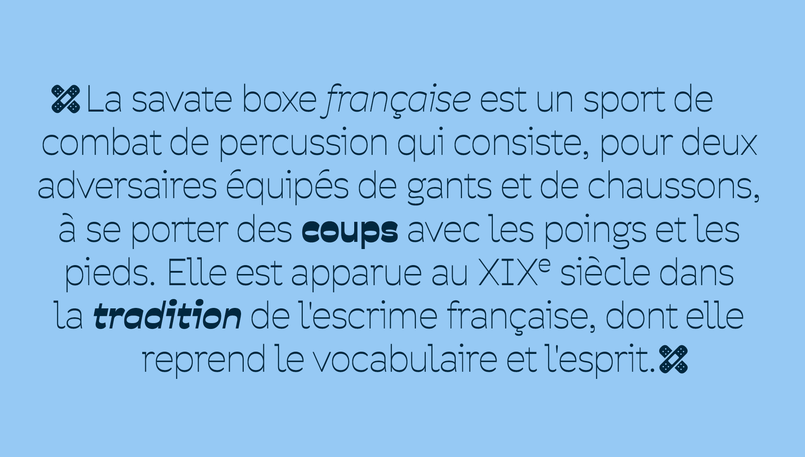
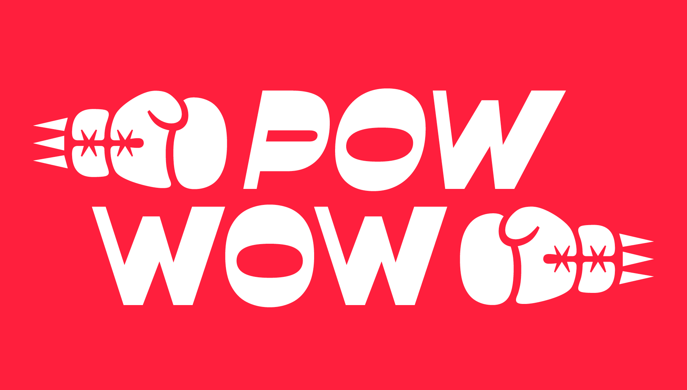

Savate is a humanist sans-serif typeface with reverse contrast. Its name, borrowed from the French martial art, reflects the typeface’s sense of motion. Its open, generous curves and assertive forms evoke wide gestures and dynamic rhythm. Designed with both flexibility and impact in mind, Savate comes in a full range of weights from Extralight to Black, with matching italics, making it well-suited for everything from bold headlines to confident, readable text.
To contribute, see github.com/maxesnee/savate.
This new release is a complete redraw of the original Savate, first published in 2016 by the We.ch collective (Max Esnée and Hadrien Bulliat) through Velvetyne. While it stays true to the spirit of the original design, every glyph has been refined to improve rhythm, structure, and overall cohesion. The family has also been significantly expanded, now offering a full palette of styles and expanded language support, including Latin Pan-African, making Savate a versatile tool for a broad range of typographic needs.
 